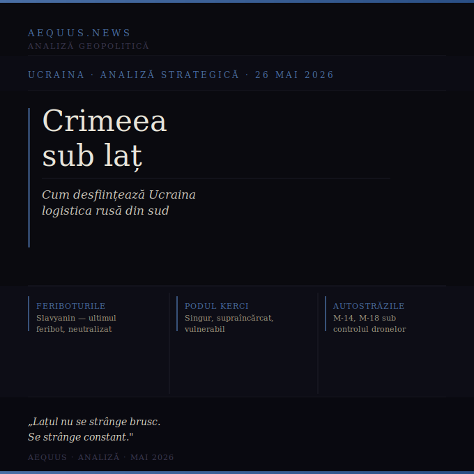

Feriboturile neutralizate, podul Kerci supraaglomerat, autostrăzile M-14 și M-18 sub controlul dronelor Hornet. Trei lovituri convergente care strâng stranglarea logistică a peninsulei ocupate.

Există momente în care un război pozițional, aparent blocat, se transformă fără să se vadă imediat. Nu printr-o ofensivă spectaculoasă, ci prin tăierea tăcută a nervilor vitali ai inamicului. Ceea ce se întâmplă în sudul Ucrainei în primăvara lui 2026 seamănă mult cu acest tip de transformare.
Ucraina nu a cucerit noi teritorii în Crimeea. Dar a început să o sufoce pe aceasta din urmă — metodic, pe mai multe axe simultan, folosind tehnologie în loc de infanterie. Rezultatul nu e o victorie declarată. E o criză logistică în expansiune, cu efecte cumulative greu de inversat.
Timp de ani, Rusia a construit un sistem redundant de aprovizionare a Crimeei: podul Kerci pentru trafic rutier și feroviar, completat de feriboturile feroviare care transportau combustibil, muniție și echipament — mărfuri prea periculoase pentru a trece pe pod.
Sistemul a fost demantelat sistematic. În noaptea de 5-6 aprilie 2026, Direcția Principală de Informații a Ucrainei (HUR) a lovit feribotul Slavyanin cu drone — ultimul feribot feroviar rusesc operațional în Strâmtoarea Kerci. Slavyanin fusese deja avariat în martie, alături de Avangard. Acum era scos definitiv din acțiune. Rusia nu mai dispune de niciun feribot feroviar în zonă.
Neutralizarea feriboturilor a avut o consecință paradoxală: Rusia a fost obligată să reia transportul de combustibil și muniție direct pe podul Kerci — tocmai tipul de marfă pe care îl evitase până acum să-l treacă pe pod, de teama incendiilor și a daunelor structurale. Imaginile publicate de civili în februarie 2026 arătau trenuri cu cisterne de combustibil traversând podul, pentru prima dată după mult timp.
Podul Kerci, deja lovit în repetate rânduri și cu o capacitate structurală redusă față de proiect, preia acum singur tot traficul logistic feroviar spre peninsulă. E singurul nod rămas. Și este, prin aceasta, mult mai vulnerabil decât oricând.
Surse: The Maritime Executive, militarnyi.com, Euromaidan Press
Concomitent cu campania navală, Ucraina a lansat o ofensivă aeriană intensă asupra coridorului rutier care leagă Rusia continentală de Crimeea: autostrăzile M-14 (Mariupol–Melitopol), M-18 (Melitopol–Crimeea) și A-280 (Rostov–Mariupol). Aceste rute reprezintă coloana vertebrală a aprovizionării terestre rusești în sud.
Instrumentul principal al acestei campanii este drona Hornet — un UAV de atac de nouă generație, cu rezistență la bruiaj electronic și control asistat de inteligență artificială. Produsă în masă din primăvara lui 2026, drona a debutat operațional în mai. Piloții ucraineni intervievați de Kyiv Post descriu aeronava ca ușor de manevrat, rezistentă la contramăsurile electronice rusești și capabilă să oprească și să incendieze orice vehicul mai mic decât un tanc.
Succesul campaniei rutiere a forțat o reacție administrativă revelatoare: guvernatorul de ocupație al regiunii Herson, Volodimir Saldo, a emis un decret care restricționează circulația camioanelor civile pe autostrada R-280 până la noi ordine. Prin această decizie, administrația rusă a transformat involuntar orice vehicul rămas pe șosea într-o țintă militară legitimă, simplificând considerabil munca operatorilor de drone ucraineni.
Surse: militarnyi.com, Kyiv Post, EUobserver
Luate împreună, cele trei componente — feriboturile eliminate, podul Kerci supraîncărcat și vulnerabil, autostrăzile sudice sub controlul focului asimetric — produc un efect de stranglare logistică progresivă. Nu este un blocaj total. Rusia găsește căi de ocolire, improvizează, suportă pierderi. Dar fiecare alternativă e mai costisitoare, mai lentă, mai riscantă decât precedenta.
Campania demonstrează și o mutație tactică semnificativă în modul în care Ucraina duce războiul: nu consumă forță vie pe liniile de contact pentru a cuceri kilometri pătrați, ci distruge sistematic capacitatea structurală a adversarului de a susține frontul. Este o logică a uzurii aplicate nu soldaților, ci infrastructurii.
Analiștii Chuck Pfarrer și Wardoggo, ale căror evaluări au atras atenția asupra acestei campanii, o numesc „strategia anacondei". Imaginea e corectă. Lațul nu se strânge brusc. Se strânge constant.
Variabila critică rămâne podul Kerci. Atâta timp cât funcționează — fie și la capacitate redusă — Crimeea nu este izolată. Dar suportă acum singur o presiune logistică pentru care nu a fost proiectat în condiții de război intens. O lovitură reușită asupra podului, combinată cu controlul dronelor asupra autostrăzilor sudice, ar transforma stranglarea parțială într-o criză de aprovizionare cu consecințe militare majore.
Kremlinul a ales să nu comenteze public campania din sud. Guvernatorul Saldo a anunțat că „noi capabilități" de contracarare a dronelor au fost desfășurate pe autostradă. Dacă ele vor funcționa sau nu, câmpul de luptă va răspunde în săptămânile următoare.
Până atunci, lațul este pus. Și se strânge.